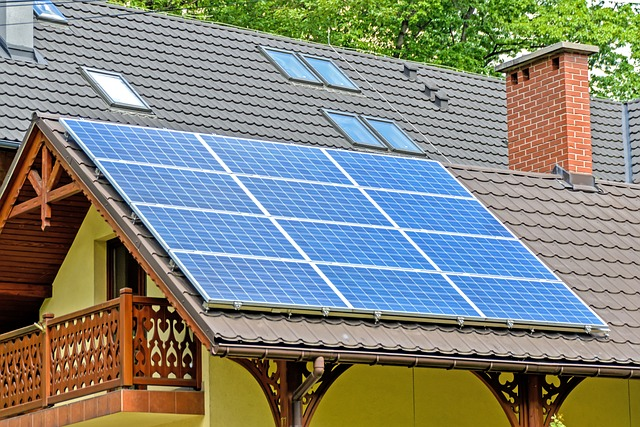
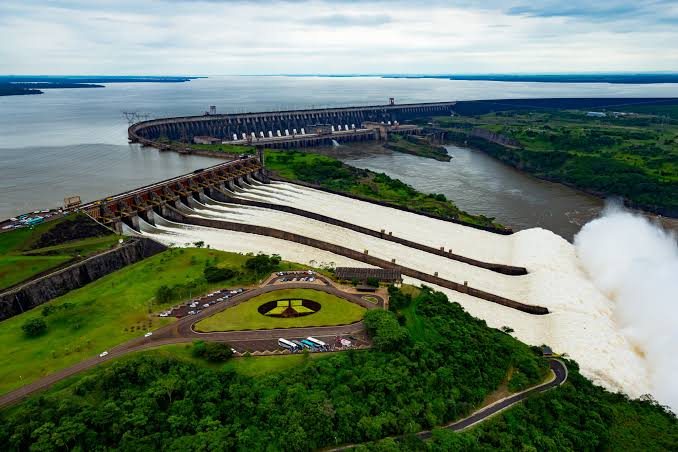
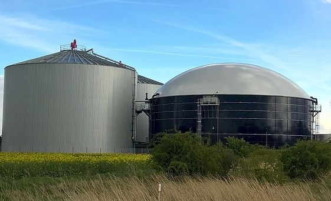

O que é Energias Renováveis?
Energia Renovável é um termo em que se refere as fontes de energia que são naturais e que são consideradas inesgotáveis a longo prazo, e que são chamadas de energias limpas, pois não emitem gases para a atmosfera como os combustíveis fósseis em que são finitos e poluem muito o meio-ambiente.
Alguns exemplos de fonte de Energias Renováveis são:
- →Sol
- →Vento
- →Água
- →Dejetos vegetais e animais
Solar
Nesse processo os painéis fotovoltaicos contém células feitas de materiais semicondutores como o silício.
Quando a luz solar atinge essas células elas geram eletricidade, essa energia pode ser usada em uso imediato, armazenada em baterias ou ser conectada a rede elétrica o que possibilita compartilhar com outras pessoas.
Imagem disponível em PixaBay
Eólica
A Energia Eólica é gerada a partir do vento por meio de aerogeradores, em que a firça dos ventos exerce uma pressão sobre as pás fazendo-as rotacionar o lixo principal em que é conectado a um gerador elétrico, que transforma o movimento mecânico em energia elétrica.
O Paraná possui um Parque Eólico no Município de Palmas com a dívida do Estado de Santa Catarina. O Parque Eólico d e Palmas foi o primeiro a ser construído do sul do Brasil, sua inauguração foi em novembro de 1999.

Imagem disponível em FreePik
Hidrelétrica
É um aforma de energia renovável que utiliza a força da água para gerar energia.
É produzida através de usinas hidrelétricas em que a água de rios é armazenada em reservatórios para acionar turbinas que são conectadas a geradores elétricos, assim gerando energia.
No Paraná tem a Usina de Itaipu em que está localizada na cidade de Foz do Iguaçu, na fronteira entre Brasil e Paraguai, ela foi considerada a maior usina hidrelétrica do mundo desde a sua inauguração no ano de 1984 até 2019, que perdeu sua colocação para a Usina de Três Gargantas que está localizada na China.
Foto tirada por Alexandre Marchetti. Disponível em CkickFoz.
Biogás
Esse processo que gera energia a partir de dejetos vegetais e animais é conhecida como biogás ou biometano. Essas matérias são decompostos em condições anaeróbicas, liberando metano, que pode ser usado como combustível.
Dentre as matérias que são utilizadas, se destacam os restos de alimentos, resíduos agrícolas, estercos de animais e lodo de estações de tratamento de esgoto. Esses materiais são processados em biodigestores, onde ocorre a fermentação anaeróbica para produção do biogás.
Disponível em PixaBay